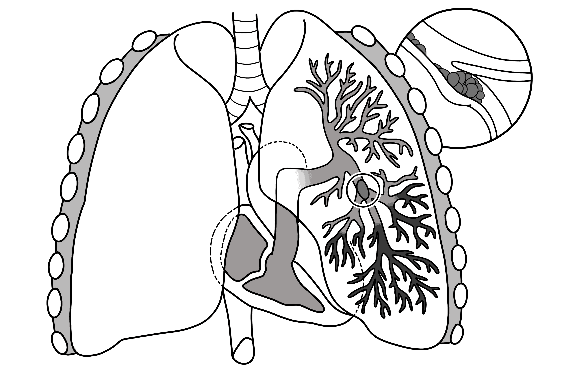
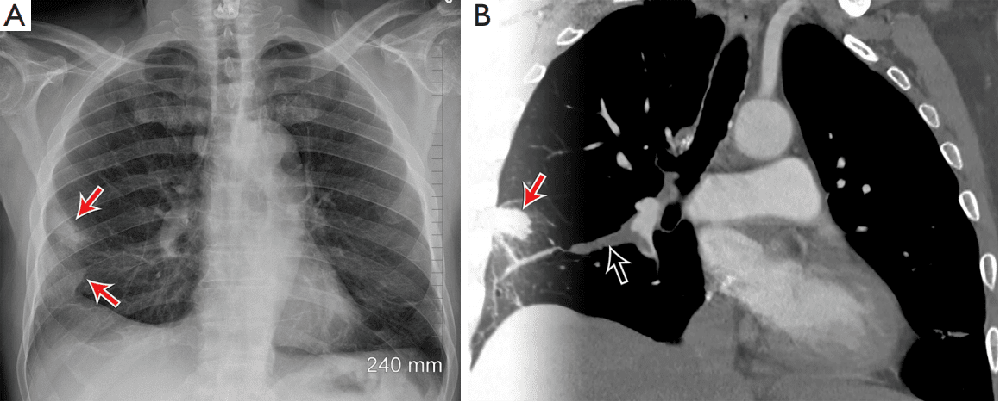
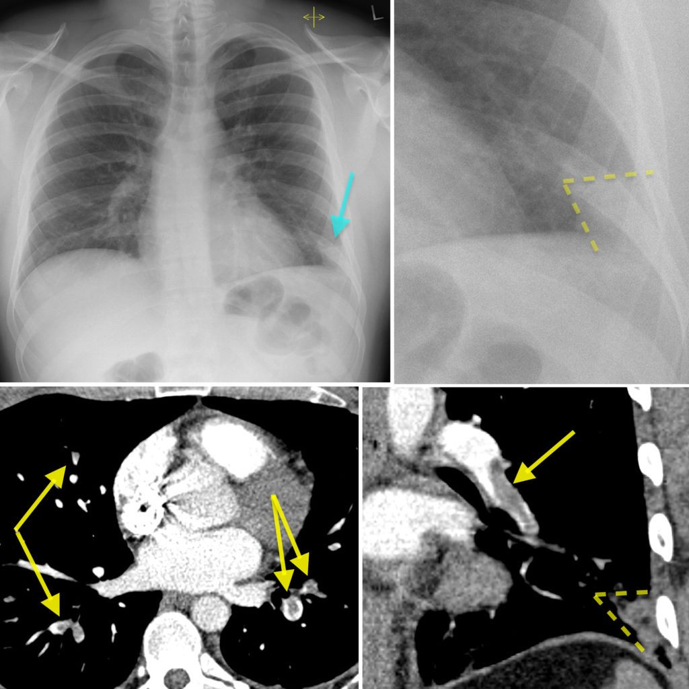
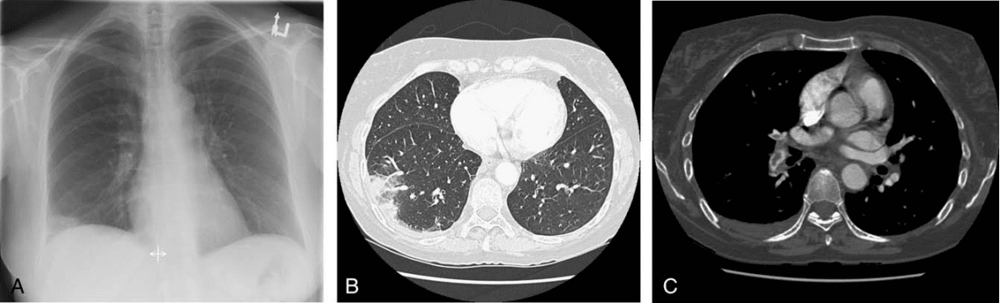
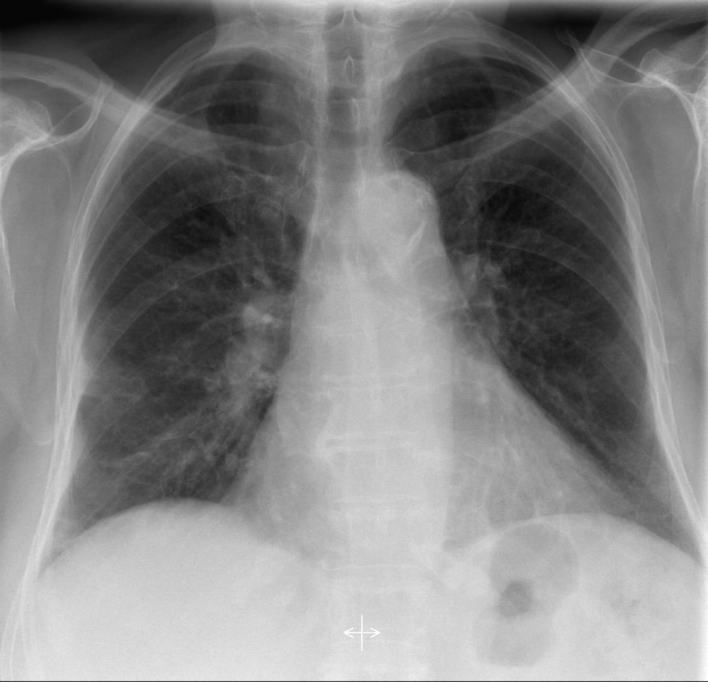
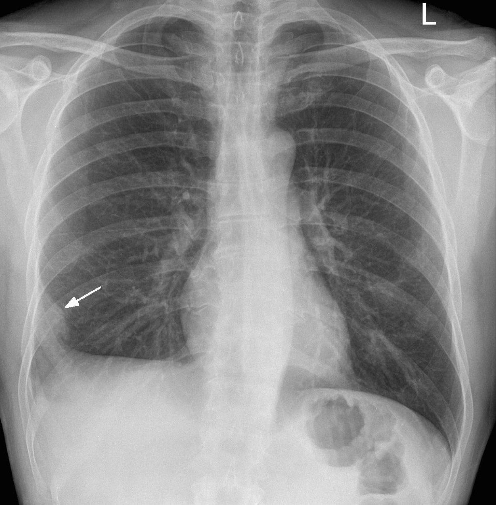
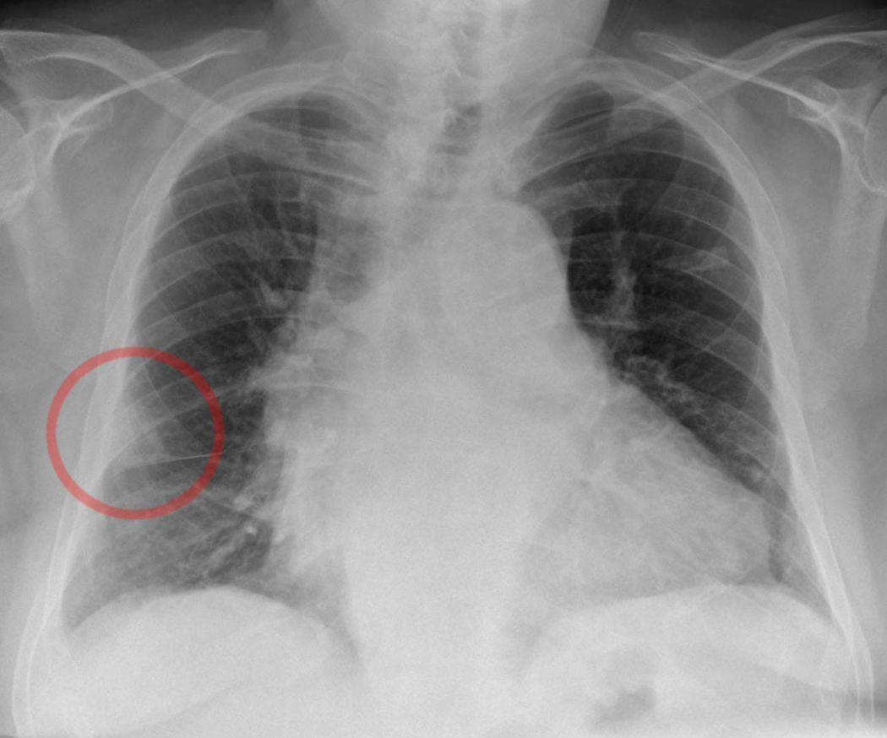
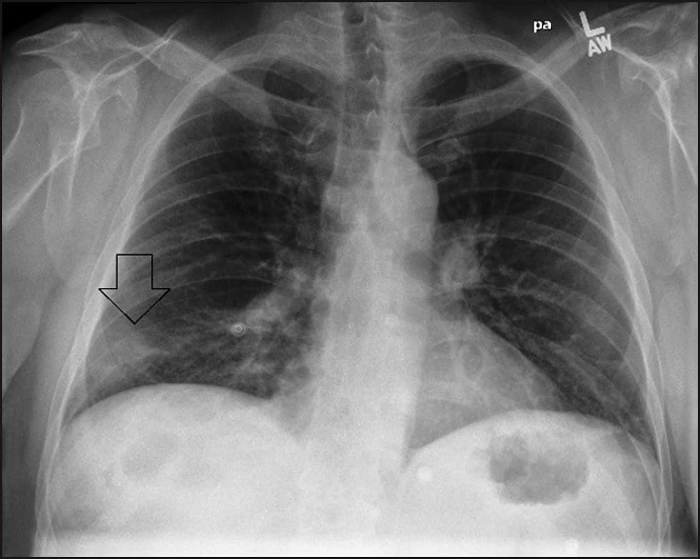
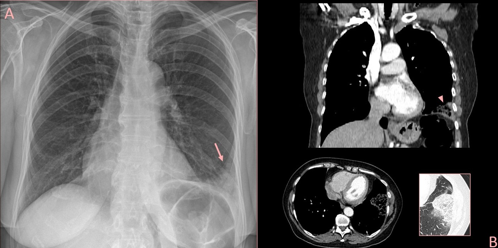

Thuyên Tắc Phổi
I. Đại cương
– Thuyên tắc phổi (pulmonary embolism, PE) và huyết khối tĩnh mạch sâu (deep vein thrombosis, DVT) là hai biểu hiện lâm sàng của bệnh lý thuyên tắc huyết khối tĩnh mạch (venous thromboembolism, VTE).
– Dịch tễ:
+ Thuyên tắc phổi là bệnh tim mạch cấp thường gặp thứ ba, sau nhồi máu cơ tim và đột quỵ.
+ Tỷ lệ tử vong trong 3 tháng ở người bệnh thuyên tắc phổi dao động 1,4–17,4%, tùy quần thể, mức độ nặng và bệnh đồng mắc.
+ Một số tổng quan ghi nhận tỷ lệ tử vong do thuyên tắc phổi cấp khoảng 7–11%; các ước tính này có thể khác nhau về quần thể và thời gian theo dõi.
+ Thuyên tắc phổi tái phát có thể làm tăng nguy cơ tử vong; mức tăng thay đổi theo quần thể.
– Căn nguyên:
+ Khoảng 90% trường hợp thuyên tắc phổi có triệu chứng bắt nguồn từ huyết khối tĩnh mạch chi dưới; vật liệu thuyên tắc không do huyết khối gồm mỡ, khí, nước ối và tế bào u.
+ Thuyên tắc không do huyết khối hiếm gặp; cân nhắc trong bối cảnh phù hợp như chấn thương, thủ thuật, sản khoa hoặc ung thư.
+ Nguy cơ huyết khối tĩnh mạch sau phẫu thuật cao nhất trong những tuần đầu và còn tăng đến 12 tuần; mức nguy cơ thay đổi theo loại phẫu thuật.
– Cơ chế bệnh sinh:
+ Huyết khối thường hình thành trong tĩnh mạch sâu khi có ứ trệ tuần hoàn, tổn thương nội mạc hoặc tăng đông; khi bong ra, huyết khối theo hệ tĩnh mạch về tim phải rồi đến động mạch phổi.
+ Tắc nghẽn động mạch phổi và co mạch do các chất trung gian làm tăng sức cản mạch phổi, tăng hậu tải thất phải; trường hợp nặng có thể gây suy thất phải, giảm cung lượng tim và sốc.
+ Trên hình ảnh, huyết khối trong động mạch phổi và dấu hiệu quá tải thất phải phản ánh lần lượt tình trạng tắc mạch và hậu quả huyết động.
– Biến chứng:
+ Di chứng gồm tăng áp phổi do huyết khối thuyên tắc mạn tính (chronic thromboembolic pulmonary hypertension, CTEPH) và suy tĩnh mạch mạn chi dưới do hội chứng hậu huyết khối (post-thrombotic syndrome, PTS), làm giảm chất lượng cuộc sống.
+ CTEPH được ước tính gặp ở khoảng 1–3% người bệnh sau thuyên tắc phổi cấp; tỷ lệ thay đổi theo quần thể, tiêu chí chẩn đoán và thời gian theo dõi.
+ Hội chứng hậu huyết khối gây suy tĩnh mạch mạn ở khoảng 20–50% người bệnh sau huyết khối tĩnh mạch sâu.
– Hình thái lâm sàng:
+ VTE thường gặp nhưng khó chẩn đoán do biểu hiện không đặc hiệu và thời điểm khởi phát khó dự đoán.
+ Một số nghiên cứu ở người bệnh huyết khối tĩnh mạch sâu chi dưới ghi nhận thuyên tắc phổi không triệu chứng lâm sàng ở khoảng 40–50%; tỷ lệ phụ thuộc quần thể và phương pháp khảo sát.
+ Ở người bệnh thuyên tắc phổi, huyết khối tĩnh mạch sâu chi dưới có thể được phát hiện ở tới 70%, tùy quần thể và phương pháp khảo sát.
– Vai trò chẩn đoán hình ảnh: Chẩn đoán hình ảnh hỗ trợ phát hiện và định vị thuyên tắc phổi, tìm huyết khối tĩnh mạch sâu, đồng thời đánh giá ảnh hưởng huyết động và biến chứng.
– Cạm bẫy:
+ Tử vong sớm chủ yếu liên quan đến thuyên tắc phổi cấp gây suy huyết động; huyết khối tĩnh mạch sâu đơn thuần ít gây tử vong trực tiếp nhưng có thể gây thuyên tắc phổi nếu huyết khối bong ra.
+ Thuyên tắc phổi có thể xuất hiện sớm sau khi hình thành huyết khối tĩnh mạch sâu, nhưng thời điểm thay đổi; mốc 3–7 ngày không áp dụng cho mọi trường hợp.
+ Một số tổng quan ghi nhận tới khoảng 10% người bệnh thuyên tắc phổi cấp tử vong đột ngột.
– Theo dõi:
+ Nguy cơ tái phát còn tồn tại sau khi ngừng kháng đông và thay đổi theo yếu tố khởi phát, yếu tố nguy cơ kéo dài.
+ Ở người bệnh có đợt VTE đầu tiên không do yếu tố khởi phát rõ ràng, đã dùng kháng đông ít nhất 3 tháng rồi ngừng, tỷ lệ tái phát tích lũy khoảng 36% sau 10 năm. Cân nhắc kéo dài kháng đông dựa trên nguy cơ tái phát và nguy cơ chảy máu.


© Chẩn Đoán Hình Ảnh Xray.vn
* Lâm sàng
– Triệu chứng không đặc hiệu:
+ Khó thở là biểu hiện thường gặp nhất; các bảng tần suất tổng hợp từ PIOPED I/II ghi nhận khoảng 73%. Khó thở có thể khởi phát đột ngột.
+ Đau ngực, thường kiểu màng phổi, gặp khoảng 66%.
+ Ho gặp khoảng 37%, thường ho khan nhưng không phải lúc nào cũng không có đờm.
+ Đau bắp chân hoặc đùi, đôi khi kèm sưng, gặp khoảng 44%; đây là biểu hiện gợi ý huyết khối tĩnh mạch sâu, không xác nhận chẩn đoán.
+ Ho ra máu gặp khoảng 13%.
+ Thở nhanh gặp khoảng 70%.
+ Nhịp tim nhanh gặp khoảng 30%.
– Cơ chế bệnh sinh:
+ Thuyên tắc ở nhánh ngoại vi có thể gây nhồi máu phổi và kích thích màng phổi, tạo đau ngực kiểu màng phổi; xuất huyết tại vùng nhồi máu có thể gây ho ra máu.
+ Thuyên tắc trung tâm hoặc diện rộng làm tăng đột ngột hậu gánh thất phải, có thể gây khó thở nặng và suy huyết động. Thiếu máu cơ tim thất phải có thể gây đau sau xương ức kiểu thắt ngực.
– Cạm bẫy:
+ Ngất ít gặp, thường dưới 10% trong các tổng hợp; khi xuất hiện, ngất liên quan với tỷ lệ bất ổn huyết động và rối loạn chức năng thất phải cao hơn, nhưng tự nó không đủ để xác định mức nguy cơ.
+ Sốc tắc nghẽn hoặc tụt huyết áp kéo dài, không do nguyên nhân khác, biểu thị mất ổn định huyết động và xếp người bệnh vào nhóm thuyên tắc phổi nguy cơ cao; không đồng nhất với mọi cơn tụt huyết áp thoáng qua.
+ Ở người bệnh có bệnh tim hoặc phổi từ trước, thuyên tắc phổi có thể chỉ biểu hiện bằng khó thở tăng dần.
II. Chẩn đoán x-quang
* Dấu hiệu Westermark
– Bác sĩ X-quang người Thụy Điển Nils Johan Hugo Westermark (1892–1980) mô tả vùng phổi tăng sáng kèm giảm hình ảnh mạch máu trong bài báo năm 1938; tên dấu hiệu Westermark được dùng về sau.
– Đặc điểm hình ảnh:
+ Vùng phổi tăng sáng tương đối ở phía ngoại vi, phía xa chỗ tắc động mạch phổi, do giảm tưới máu khu trú.
+ Mạch máu ngoại vi thưa và giảm khẩu kính; các bóng mạch trung tâm có thể kết thúc đột ngột tại ranh giới vùng giảm tưới máu, không nhất thiết sát vị trí tắc.
+ Trong phân tích phim X-quang của đoàn hệ PIOPED, độ nhạy được báo cáo khoảng 14% và độ đặc hiệu khoảng 92%; dấu hiệu ít gặp và không đủ để xác lập chẩn đoán khi đứng riêng lẻ.
– Cơ chế tạo hình ảnh: Tắc động mạch phổi làm giảm dòng máu đến vùng phổi phía xa chỗ tắc; giảm lượng máu trong mạch và co mạch có thể làm vùng này tăng sáng, kèm thưa và giảm khẩu kính các bóng mạch.
– Phân biệt:
+ Tràn khí màng phổi (pneumothorax): thường thấy đường màng phổi tạng và mất bóng mạch phía ngoài đường này; dấu hiệu Westermark không có đường màng phổi, các bóng mạch chỉ thưa hoặc nhỏ đi trong vùng giảm tưới máu.
+ Khí phế thũng (emphysema): có thể gây tăng sáng và giảm bóng mạch, tạo chồng lấp; thường đi kèm dấu hiệu căng phổi hoặc bóng khí và không khu trú theo lãnh thổ tưới máu của một động mạch phổi.
– Cạm bẫy:
+ Dấu hiệu kín đáo, dễ bỏ sót; không thấy dấu hiệu này không loại trừ thuyên tắc phổi.
+ X-quang ngực không xác nhận hoặc loại trừ được thuyên tắc phổi; khi còn nghi ngờ, tiếp tục đánh giá theo quy trình chẩn đoán, thường bằng CLVT động mạch phổi (CTPA) nếu phù hợp.


=> Case lâm sàng 1:


=> Case lâm sàng 2:


=> Case lâm sàng 3:


* Dấu hiệu bướu Hampton
– Aubrey Otis Hampton (1900–1955) và Benjamin Castleman công bố nghiên cứu đối chiếu hình ảnh X-quang với giải phẫu bệnh năm 1940, mô tả các đám mờ ngoại vi liên quan đến nhồi máu phổi; tên gọi “bướu Hampton” được dùng về sau.
– Đặc điểm hình ảnh:
+ Dấu hiệu bướu Hampton (Hampton’s hump) là đám mờ ngoại vi tiếp xúc màng phổi, thường hình chêm hoặc có bờ trong lồi về phía rốn phổi/tim; dấu hiệu gợi ý nhồi máu phổi (pulmonary infarction), không tự nó xác định thuyên tắc phổi.
+ Trong đoàn hệ PIOPED, độ nhạy được báo cáo khoảng 22% và độ đặc hiệu khoảng 82%; dấu hiệu ít gặp, độ nhạy thấp và độ đặc hiệu ở mức vừa, không đủ để chẩn đoán thuyên tắc phổi khi đứng riêng lẻ.
– Cơ chế tạo hình ảnh:
+ Tắc nhánh động mạch phổi ngoại vi làm giảm tưới máu; nhồi máu không xảy ra trong mọi trường hợp vì phổi có tuần hoàn kép từ động mạch phổi và động mạch phế quản.
+ Khi tuần hoàn bàng hệ không bù đủ, có thể xảy ra xuất huyết trong nhu mô phổi, sau đó hoại tử; tổn thương ngoại vi áp màng phổi tạo nên đám mờ đặc trưng.
– Phân biệt:
+ Viêm phổi thùy (lobar pneumonia) cũng có thể gây đông đặc phổi và khí phế quản đồ. Đám mờ dạng chêm, ngoại vi áp màng phổi gợi ý nhồi máu hơn, nhưng hình thái có thể chồng lấp.
+ Không có khí phế quản đồ hoặc không cải thiện với kháng sinh không đủ để xác định nhồi máu phổi.
– Cạm bẫy: Dấu hiệu gợi ý nhồi máu phổi, không đặc hiệu cho thuyên tắc phổi; khi nghi ngờ, cần đối chiếu lâm sàng và xác nhận theo quy trình chẩn đoán, thường bằng CLVT động mạch phổi (CTPA) nếu phù hợp.
















=> Case lâm sàng 1:


=> Case lâm sàng 2:


=> Case lâm sàng 3:


=> Case lâm sàng 4:


=> Case lâm sàng 5:


* Dấu hiệu Fleischner
– Felix George Fleischner (1893–1969), bác sĩ X-quang người Mỹ gốc Áo, công bố các công trình về hình ảnh thuyên tắc phổi trong giai đoạn 1958–1962, trong đó có bài năm 1961; hiện tượng giãn động mạch phổi trung tâm đã được mô tả trước đó.
– Đặc điểm hình ảnh:
+ Dấu hiệu Fleischner (Fleischner sign) là động mạch phổi trung tâm hoặc đoạn gần nổi rõ, giãn trên X-quang ngực; trong thuyên tắc phổi, dấu hiệu có thể liên quan đến huyết khối lớn ở trung tâm hoặc tăng áp phổi cấp.
+ Có thể kèm thuôn nhỏ hoặc cắt cụt đột ngột động mạch phía hạ lưu. Đây là dấu hiệu khớp (knuckle sign), một dấu hiệu riêng biệt nhưng có thể xuất hiện đồng thời.
+ Dấu hiệu Fleischner không đặc hiệu, không đủ để xác nhận hoặc loại trừ thuyên tắc phổi khi đứng riêng lẻ.
– Cơ chế tạo hình ảnh:
+ Động mạch phổi trung tâm có thể giãn do huyết khối lớn làm căng cơ học thành mạch, do giãn mạch động học trong tăng áp phổi cấp, hoặc do cả hai cơ chế.
+ Thuôn nhỏ hoặc cắt cụt động mạch phía hạ lưu phản ánh tắc nghẽn và giảm dòng máu sau vị trí tắc; đây là cơ chế của dấu hiệu khớp.
– Cạm bẫy:
+ Giãn động mạch phổi trung tâm cũng gặp trong tăng áp phổi mạn hoặc luồng thông tim bẩm sinh. Hạch hoặc khối u vùng rốn phổi có thể tạo hình ảnh rốn phổi nổi rõ nhưng không phải giãn động mạch; cần đánh giá đường bờ và các dấu hiệu mạch máu đi kèm.
+ Dấu hiệu này không xác định nguyên nhân giãn mạch. Khi nghi ngờ thuyên tắc phổi cấp, cần đánh giá theo quy trình chẩn đoán và xác nhận bằng CLVT động mạch phổi khi phù hợp.


=> Case lâm sàng 1:


=> Case lâm sàng 2:


=> Case lâm sàng 3:


* Tổn thương phối hợp
– Trong đoàn hệ PIOPED, X-quang ngực bình thường ở khoảng 12% người bệnh đã xác định thuyên tắc phổi; phim bình thường không loại trừ chẩn đoán. Các bất thường trên phim nhìn chung không đặc hiệu.
– Các bất thường có thể gặp gồm xẹp phổi, thường dưới phân thùy; tràn dịch màng phổi, thường lượng ít; và đám mờ nhu mô có thể liên quan đến xuất huyết hoặc nhồi máu phổi.
– Trong một nghiên cứu hồi cứu trên 230 người bệnh thuyên tắc phổi, tràn dịch được phát hiện ở 32% trên X-quang ngực và 47% trên CT. Tần suất thay đổi theo quần thể và phương tiện khảo sát; phần lớn tràn dịch nhỏ, thường một bên nhưng có thể hai bên.
– Không nên dùng bên tràn dịch để suy ra bên hoặc vị trí huyết khối.
III. Chẩn đoán CLVT
1. Tắc cấp tính
– Dấu hiệu trực tiếp:
+ Khuyết thuốc cản quang trong lòng động mạch phổi; huyết khối có thể gây tắc một phần hoặc hoàn toàn, đôi khi với cắt cụt đột ngột mạch phía hạ lưu.
+ Huyết khối lệch tâm áp thành thường tạo góc nhọn với thành mạch. Đoạn động mạch chứa huyết khối có thể giãn, nhất là khi tắc hoàn toàn; dấu hiệu giãn không phải lúc nào cũng có.
+ Khi huyết khối tắc một phần nằm ở trung tâm lòng mạch, viền thuốc cản quang tạo hình vòng trên lát cắt vuông góc trục mạch (polo mint/doughnut sign). Trên mặt phẳng dọc theo trục mạch, thuốc cản quang hai bên huyết khối tạo hình đường ray (railway track sign); đây là các hình thái nhìn khác nhau của khuyết thuốc.
– Dấu hiệu gián tiếp:
+ Đám mờ hoặc đông đặc ngoại vi dạng chêm, áp màng phổi, có thể biểu hiện nhồi máu phổi.
+ Xẹp phổi và tràn dịch màng phổi cũng có thể gặp nhưng không đặc hiệu.
– Cạm bẫy: Pha trộn dòng thuốc cản quang hoặc thuốc cản quang không đủ trong động mạch phổi có thể giả dạng khuyết thuốc; cần đánh giá chất lượng bắt thuốc và đối chiếu trên nhiều mặt phẳng.
* Dấu hiệu trực tiếp
– Hình ảnh huyết khối trong lòng động mạch:
+ Huyết khối tắc một phần nằm ở trung tâm có thể tạo khuyết thuốc được thuốc cản quang bao quanh: hình vòng trên mặt cắt vuông góc trục mạch (polo mint sign) và hình đường ray trên mặt cắt dọc theo trục mạch (railway track sign). Viền thuốc phản ánh dòng thuốc còn đi qua quanh huyết khối, không đồng nghĩa huyết khối tự do trong lòng mạch.
+ Khuyết thuốc lệch tâm, áp thành trong thuyên tắc cấp thường tạo góc nhọn với thành mạch; bờ hướng vào lòng mạch có thể lồi.
+ Động mạch chứa huyết khối cấp có thể giãn, nhưng đây không phải dấu hiệu bắt buộc.
+ Hỗ trợ phân biệt với huyết khối mạn: huyết khối cấp thường tạo góc nhọn; huyết khối mạn thường áp thành, tạo góc tù, có thể có bờ lõm, dải hoặc lưới trong lòng mạch và làm hẹp động mạch.
+ Giả ảnh do dòng chảy hoặc thuốc cản quang ngấm không đủ có thể giống khuyết thuốc; cần kiểm tra độ bắt thuốc và đối chiếu trên nhiều mặt phẳng.


=> Case lâm sàng 1:


=> Case lâm sàng 2:


– Dấu hiệu polo mint (polo mint sign):
+ Khuyết thuốc trung tâm được thuốc cản quang bao quanh tạo dấu hiệu polo-mint (hình vành khăn) trên lát cắt ngang gần vuông góc với trục mạch; khi quan sát dọc theo trục mạch, có thể thấy hình railway-track. Đây là các hình ảnh của khuyết thuốc trung tâm ở những hướng quan sát khác nhau; viền thuốc không chứng minh huyết khối di động tự do.
+ Dấu hiệu khác của thuyên tắc cấp là khuyết thuốc lệch tâm, thường tạo góc nhọn với thành mạch. Động mạch có thể giãn nhưng không bắt buộc; đây không phải thành phần của dấu hiệu polo-mint.
+ Huyết khối mạn thường bám thành, tạo góc tù; có thể kèm hẹp mạch hoặc các dải, lưới. Phân biệt cấp–mạn dựa trên tổ hợp dấu hiệu.
+ Đối chiếu đa mặt phẳng và đánh giá độ ngấm thuốc để phân biệt huyết khối thật với giả khuyết do ngấm thuốc kém hoặc pha trộn dòng.


=> Case lâm sàng 1:


=> Case lâm sàng 2:


– Dấu hiệu knuckle
+ Huyết khối tắc hoàn toàn có thể gây cắt cụt đột ngột động mạch và không ngấm thuốc ở đoạn hạ lưu. Kiểu cắt cụt này được gọi là dấu hiệu knuckle trên X-quang; khi mô tả CLVT, nên nêu trực tiếp vị trí và mức độ tắc.
+ Khi tắc hoàn toàn, đầu cột thuốc cản quang có thể có bờ lùi lõm hình chén trên chụp mạch phổi; trên CLVT, dấu hiệu trực tiếp chủ yếu là lòng mạch bị tắc và đoạn hạ lưu không ngấm thuốc.
+ Động mạch chứa huyết khối cấp có thể giãn do huyết khối làm căng mạch và tác động của dòng máu theo nhịp; không phải do huyết khối còn “tự do” trong lòng mạch, và dấu hiệu giãn không xuất hiện ở mọi trường hợp.
+ Tắc cấp có thể tạo góc nhọn giữa khuyết thuốc lệch tâm và thành mạch, đôi khi kèm giãn động mạch. Huyết khối mạn thường áp thành tạo góc tù, có thể kèm hẹp mạch hoặc các dải, lưới trong lòng mạch; các dấu hiệu này có giá trị gợi ý, không tuyệt đối.
+ Cần đối chiếu đa mặt phẳng và đánh giá độ bắt thuốc để phân biệt huyết khối với giả cắt cụt do ngấm thuốc kém hoặc pha trộn dòng.


=> Case lâm sàng 1:


=> Case lâm sàng 2:


– Hình yên ngựa (saddle embolus):
+ Khuyết thuốc do huyết khối bắc qua chạc phân đôi của thân động mạch phổi, thường lan vào các động mạch phổi chính phải và trái.
+ Hình thái này thường biểu thị huyết khối trung tâm có kích thước lớn, nhưng vị trí yên ngựa không tự nó xác định thuyên tắc phổi nguy cơ cao. Cần đánh giá tình trạng huyết động và quá tải, chức năng thất phải.
+ Đối chiếu trên nhiều mặt phẳng để phân biệt huyết khối thật với giả khuyết do pha trộn dòng hoặc giả ảnh từ thuốc cản quang đậm đặc ở tĩnh mạch chủ trên.
– Tăng đường kính mạch máu:
+ Đoạn động mạch phổi chứa huyết khối cấp, nhất là khi tắc hoàn toàn, có thể giãn so với đoạn lân cận hoặc nhánh đối bên cùng cấp; nếu có phim trước, đối chiếu thêm.
+ Giãn khu trú có thể liên quan đến huyết khối bị mắc trong lòng mạch và tác động của dòng máu theo nhịp; không nên mặc định quy cho tăng áp động mạch phổi cấp. Dấu hiệu này không xuất hiện ở mọi trường hợp.
+ Trong tắc mạn, đoạn mạch bị ảnh hưởng có thể hẹp hoặc nhỏ hơn; ngược lại, tăng áp phổi mạn có thể làm giãn các động mạch phổi trung tâm. So sánh các nhánh cùng cấp và kết hợp dấu hiệu khác, không dùng đường kính đơn độc để xác định tuổi huyết khối.

* Dấu hiệu gián tiếp
– Xẹp phổi:
+ Có thể gặp xẹp phổi dạng dải hoặc đĩa, thường ở vùng đáy; đây là dấu hiệu không đặc hiệu.
+ Trong thuyên tắc phổi, tổn thương tế bào phế nang và rối loạn hoạt tính surfactant có thể góp phần gây xẹp phổi. Đây là cơ chế khác với xẹp do hấp thu, thường liên quan đến tắc nghẽn đường thở; không nên khẳng định xẹp do thuyên tắc phổi luôn không có yếu tố tắc nghẽn.
+ Trên CT, vùng xẹp thường tăng đậm độ và giảm thể tích. Mức độ ngấm thuốc thay đổi, không đủ để quy kết giảm tưới máu hay xác định xẹp phổi do thuyên tắc; cần phân biệt với nhồi máu phổi và các dạng đông đặc khác.
– Tổn thương đông đặc:
+ Nhồi máu phổi có thể biểu hiện bằng đám đông đặc ngoại vi, áp màng phổi, thường hình nêm; đôi khi có quầng kính mờ xung quanh. Hình ảnh có thể chồng lấp với viêm phổi tổ chức hóa nhưng không đặc hiệu.
+ Tổn thương thường nằm trong vùng cấp máu của nhánh động mạch bị tắc. Kính mờ quanh đám đông đặc có thể phản ánh xuất huyết phế nang; không đủ căn cứ để kết luận là tái tưới máu.
+ Tắc động mạch phổi xa có thể gây tổn thương thiếu máu kèm xuất huyết phế nang và hoại tử. Tuy nhiên, không phải mọi vùng đông đặc ở người bệnh thuyên tắc phổi đều là nhồi máu.
+ Nhồi máu phổi thường có hình nêm, đáy áp màng phổi, đỉnh hướng về rốn phổi; có thể có các ổ sáng nhỏ ở trung tâm. Khí-phế quản đồ thường vắng mặt, không phải là dấu hiệu điển hình.


– Tổn thương phù phổi:
+ Phù phổi trên CT thường biểu hiện bằng kính mờ hai bên, hay ưu thế quanh rốn phổi; có thể kèm dày vách liên tiểu thùy trơn, đôi khi rõ ở ngoại vi, và dày bó mạch–phế quản. Trường hợp nặng có thể xuất hiện đông đặc. Các dấu hiệu này không đặc hiệu cho thuyên tắc phổi.
+ Phù phổi liên quan thuyên tắc phổi ít gặp. Một cơ chế được đề xuất là tái phân bố lưu lượng, làm tăng tưới máu tương đối ở vùng nhu mô còn được cấp máu; tại đó có thể xuất hiện kính mờ, đôi khi kèm dày vách, với ranh giới khá rõ. Đây là cơ chế giả thuyết, không phải dấu hiệu xác định thuyên tắc phổi.
+ Không quy phù phổi trong thuyên tắc phổi chỉ cho tăng tính thấm mao mạch. Cần đối chiếu hình ảnh và lâm sàng để đánh giá các nguyên nhân khác hoặc đồng thời, nhất là tăng áp lực thủy tĩnh do suy tim trái hay quá tải dịch.
– Tạo hang (cavitation):
+ Hiếm gặp; có thể xuất hiện muộn trong vùng nhồi máu phổi ngoại vi thuộc lãnh thổ cấp máu của nhánh động mạch phổi bị tắc.
+ Hang có thể hình thành do hoại tử vô khuẩn của vùng nhồi máu; một số trường hợp có thể bội nhiễm và tiến triển thành áp xe.
+ Thành hang mỏng hoặc không có mức khí–dịch không loại trừ nhiễm trùng. Cần đánh giá kết hợp triệu chứng, xét nghiệm, hình thái thành hang và diễn tiến hình ảnh. Thành dày, viền ngấm thuốc hoặc mức khí–dịch làm tăng nghi ngờ áp xe nhưng không đặc hiệu.


=> Case lâm sàng 1:


– Tràn dịch màng phổi:
+ Tràn dịch liên quan thuyên tắc phổi thường lượng ít; nếu chọc dò, thường là dịch tiết và có thể lẫn máu, đôi khi là dịch thấm.
+ Cơ chế chưa hoàn toàn rõ; có thể liên quan tăng dịch mô kẽ và tính thấm mạch do thiếu máu hoặc các chất trung gian viêm. Nhồi máu có thể góp phần gây phản ứng viêm màng phổi, nhưng không phải mọi trường hợp đều kèm nhồi máu; không nên mặc định dịch là do xuất huyết phế nang lan ra màng phổi.
+ Dịch thường một bên, đôi khi hai bên; có thể cùng bên hoặc đối bên với huyết khối. Không dùng riêng vị trí hay lượng dịch để định vị huyết khối hoặc phân tầng mức độ nặng.
+ Tràn dịch không đặc hiệu cho thuyên tắc phổi. Cần cân nhắc suy tim, viêm phổi, ung thư và các nguyên nhân khác dựa trên lâm sàng cùng các dấu hiệu hình ảnh phối hợp.
* Chỉ số tắc nghẽn (2001)
– Salah D. Qanadli là tác giả đề xuất chỉ số CT định lượng mức độ tắc nghẽn động mạch phổi, thuộc Khoa Chẩn đoán hình ảnh, Đại học René Descartes–Paris V, Bệnh viện Ambroise-Paré, Pháp.
– Mỗi phổi được quy ước có 10 nhánh phân thùy: bên phải gồm 3 nhánh thùy trên, 2 nhánh thùy giữa và 5 nhánh thùy dưới; bên trái gồm 3 nhánh thùy trên, 2 nhánh lưỡi và 5 nhánh thùy dưới.
– Mức độ tắc của mỗi nhánh: không tắc = 0; tắc một phần = 1; tắc hoàn toàn = 2.
– Với mỗi vị trí tắc, n là số nhánh phân thùy có huyết khối hoặc nằm phía hạ lưu của vị trí tắc gần nhất; tổng điểm tắc nghẽn là Σ(n × d), trong đó d là mức độ tắc.
– Chỉ số tắc nghẽn (%) = [Σ(n × d) / 40] × 100; tổng điểm tối đa là 40.
– Chỉ số này lượng hóa gánh nặng tắc nghẽn giải phẫu, không thay thế đánh giá huyết động, chức năng thất phải hoặc phân tầng nguy cơ lâm sàng.

2. Tắc mạn tính
* Biểu hiện ĐM phổi

– Tắc hoàn toàn một nhánh động mạch:
+ Có thể thấy cắt cụt mạch; đoạn mạch bệnh lý thường nhỏ hơn nhánh đối bên tương ứng ở cùng cấp.
+ Khẩu kính giảm có thể liên quan đến co rút huyết khối đã tổ chức và xơ hóa.
– Khuyết thuốc hình liềm:
+ Huyết khối mạn thường bám lệch tâm vào thành mạch, tạo khuyết thuốc hình liềm, bờ lõm và góc tù với thành mạch.
+ Có thể gặp vôi hóa ở huyết khối bám thành.
+ So với huyết khối cấp thường tạo góc nhọn, bờ lồi và làm giãn mạch, các dấu hiệu trên gợi ý tắc mạn.
– Thành mạch dày, lòng mạch hẹp không đều:
+ Có thể do huyết khối tổ chức gây dày thành và co rút lòng mạch.
+ Có thể kèm các dải hoặc màng xơ trong lòng mạch và giãn sau chỗ hẹp.
– Mạch bàng hệ:
+ Có thể thấy động mạch phế quản và các động mạch hệ thống ngoài phế quản giãn, ngoằn ngoèo để bù tuần hoàn vùng giảm tưới máu.
+ Khi nghi tắc mạn tính, cần khảo sát động mạch phế quản và các mạch bàng hệ khác; giãn mạch bàng hệ không đặc hiệu cho tắc mạn tính do huyết khối.


* Tăng áp ĐMP thứ phát
– Giãn thân động mạch phổi có thể gợi ý tăng áp động mạch phổi và tăng gánh áp lực thất phải, nhưng không đủ để xác định chẩn đoán.
– Trên CT, đường kính thân động mạch phổi đo theo trục ngang ở mức chia nhánh động mạch phổi có ngưỡng tham chiếu trên khoảng 29 mm ở nam và 27 mm ở nữ.
– Tỷ lệ đường kính thân động mạch phổi/động mạch chủ lên đo cùng mức > 0,9 vượt ngưỡng tham chiếu trên; bình thường thân động mạch phổi thường nhỏ hơn động mạch chủ lên. Một số tài liệu dùng đường kính ≥ 33 mm hoặc tỷ lệ > 1,1 để tăng độ đặc hiệu.
– Các số đo này chỉ gợi ý tăng áp động mạch phổi; cần đối chiếu dấu hiệu tim phải và lâm sàng, siêu âm tim, và đo huyết động khi có chỉ định.


* Biểu hiện tại tim
– Giãn và phì đại thất phải do tăng gánh:
+ Tăng áp lực thất phải có thể gây giãn buồng thất; thành thất phải dày > 4 mm gợi ý phì đại do tăng gánh mạn, không phải dấu hiệu của PE cấp đơn thuần.
+ Tỷ số đường kính ngang thất phải/thất trái > 1 trên mặt cắt ngang hoặc > 0,9 trên mặt phẳng tái tạo bốn buồng gợi ý giãn thất phải; đây là dấu hiệu hỗ trợ phân tầng nguy cơ, không nên dùng đơn độc để dự đoán diễn biến.
+ Đo đường kính hai thất trên cùng mặt phẳng. Trên CTPA thường không đồng bộ điện tâm đồ, do đó không bắt buộc đo ở thì tâm trương.
– Vách liên thất dẹt hoặc lệch sang trái: Gợi ý tăng áp lực hoặc tăng gánh thất phải; cần diễn giải cùng các dấu hiệu tim phải khác.

– Trào ngược thuốc cản quang:
+ Trên CTPA, thuốc cản quang có thể trào ngược từ tim phải vào tĩnh mạch chủ dưới và các tĩnh mạch gan.
+ Trào ngược rõ, lan vào tĩnh mạch gan, gợi ý tăng áp lực tim phải hoặc rối loạn chức năng thất phải; mức độ trào ngược nhiều có thể liên quan diễn tiến xấu nhưng không tự nó xác định suy thất phải rất nặng.
+ Tốc độ tiêm thuốc cao làm hiện tượng trào ngược thường gặp hơn và giảm độ đặc hiệu. Cần xem xét tốc độ tiêm và kỹ thuật hô hấp khi diễn giải.

* Giãn ĐM phế quản
– Tăng lưu lượng động mạch phế quản trong tắc mạn tính:
+ Động mạch phế quản chủ yếu nuôi thành phế quản, mô nâng đỡ và màng phổi; không phải nguồn tưới máu chính cho trao đổi khí ở phế nang.
+ Khi động mạch phổi bị tắc mạn, động mạch phế quản và các mạch bàng hệ hệ thống có thể giãn, tăng lưu lượng qua các nối phế quản–động mạch phổi để bù tưới máu vùng thiếu máu.
+ Giãn động mạch phế quản làm tăng nguy cơ ho ra máu; cần nhận diện và đánh giá mạch bàng hệ khi lập kế hoạch can thiệp. Dấu hiệu này không đặc hiệu cho tắc mạn do huyết khối.

* Tổn thương nhu mô
– Di chứng nhu mô sau nhồi máu trong tắc mạn tính:
+ Có thể thấy các dải xơ, đám mờ dạng đường không đều hoặc hình nêm ở ngoại vi, thường tại thùy dưới và kèm dày màng phổi. Tạo hang là biến chứng hiếm.
+ Tưới máu dạng khảm (mosaic perfusion) biểu hiện bằng các vùng giảm và tăng đậm độ xen kẽ: vùng giảm đậm độ thường giảm tưới máu, có thể kèm mạch nhỏ hơn; vùng tăng đậm độ phản ánh tái phân bố dòng máu tới vùng còn mạch thông.
+ Có thể kèm giãn phế quản (bronchiectasis) trong vùng tổn thương mạn tính; dấu hiệu này không đặc hiệu cho tắc mạch mạn.
+ Để phân biệt với bệnh đường thở nhỏ, đánh giá khẩu kính mạch theo vùng giảm đậm độ và tìm khí cạm bẫy trên thì thở ra cùng các dấu hiệu bệnh đường thở.


IV. Tiên lượng & Điều trị
– Nguyên tắc chung:
+ Xử trí tắc mạch phổi cấp theo phân tầng nguy cơ, tham khảo hướng dẫn Hội Tim mạch châu Âu (ESC, 2019) và cập nhật đa hội chuyên ngành AHA/ACC (2026); xử trí tăng áp phổi và tăng áp phổi do huyết khối tắc mạn theo hướng dẫn ESC/ERS (2022).
+ CLVT động mạch phổi cung cấp thông tin về gánh nặng huyết khối, tỷ số thất phải/thất trái và dấu hiệu quá tải tim phải; không đo trực tiếp áp lực động mạch phổi. Quyết định tái tưới máu cần dựa chủ yếu vào tình trạng huyết động, chức năng thất phải, dấu ấn sinh học và phân tầng nguy cơ tổng thể.
+ Theo dõi triệu chứng, chức năng thất phải, tái phát và biến chứng chảy máu; không nêu liều thuốc hoặc chỉ định điều trị cho từng người bệnh.
– Tiên lượng:
+ Giãn thất phải, tỷ số thất phải/thất trái tăng, vách liên thất dẹt hoặc lệch trái, và trào ngược thuốc cản quang vào tĩnh mạch chủ dưới/tĩnh mạch gan là các dấu hiệu hình ảnh hỗ trợ đánh giá nguy cơ. Gánh nặng huyết khối không nên dùng đơn độc để dự báo diễn biến.
+ Sốc, tụt huyết áp hoặc rối loạn chức năng thất phải, phối hợp với các dấu ấn sinh học khi phù hợp, cần được phân tầng nguy cơ sớm.
+ Sau tắc cấp, theo dõi tái phát và triệu chứng tồn lưu; khó thở hoặc giảm khả năng gắng sức kéo dài cần được đánh giá tăng áp phổi do huyết khối tắc mạn.
– Điều trị tắc cấp tính:
+ Kháng đông là nền tảng điều trị. Ở người bệnh đủ điều kiện, thuốc kháng đông đường uống trực tiếp thường được ưu tiên hơn thuốc kháng vitamin K; lựa chọn thuốc và cách khởi trị tùy loại thuốc, tình trạng lâm sàng và chống chỉ định.
+ Với PE nguy cơ cao có bất ổn huyết động, tiêu sợi huyết toàn thân là lựa chọn tái tưới máu nếu không có chống chỉ định. Can thiệp qua ống thông hoặc lấy huyết khối phẫu thuật được cân nhắc khi tiêu sợi huyết chống chỉ định, thất bại hoặc ở trường hợp chọn lọc tại trung tâm có kinh nghiệm.
+ Lưới lọc tĩnh mạch chủ dưới chỉ dùng chọn lọc khi có chống chỉ định kháng đông hoặc tái phát thuyên tắc dù đã kháng đông đầy đủ; không dùng thường quy và nên lấy ra khi không còn chỉ định nếu khả thi.
– Điều trị tắc mạn tính và tăng áp phổi do huyết khối tắc mạn:
+ Với CTEPH, kháng đông suốt đời và đánh giá tại trung tâm chuyên sâu, theo nhóm đa chuyên khoa.
+ Bóc nội mạc động mạch phổi là điều trị ưu tiên, có khả năng triệt căn ở người bệnh được đánh giá là có thể phẫu thuật; không chỉ giới hạn ở tổn thương trung tâm.
+ Nong động mạch phổi bằng bóng và riociguat (thuốc kích thích guanylate cyclase hòa tan) được cân nhắc cho CTEPH không phẫu thuật được hoặc còn/tái phát tăng áp phổi sau phẫu thuật; lựa chọn hoặc phối hợp điều trị do nhóm chuyên sâu quyết định.
Tài liệu tham khảo
* CT Angiography of Pulmonary Embolism: Diagnostic Criteria and Causes of Misdiagnosis – Conrad Wittram, MB, ChB, Michael M. Maher, MD
* Radiological monitoring in pulmonary embolism with 64-multidetector CT – G. Gallardo-Madueño, I. Torres, C. Fernandez-Capitán
* Chronic pulmonary emboli and radiologic mimics on CT pulmonary angiography: a diagnostic challenge – J. Saad, F. Marrakchi, A. Zrig
* Nonthrombotic pulmonary arterial embolism: radiological findings – R. Sanchez Oro, L. Ariño Montaner, M. Bértolo Domínguez
* Magnetic Resonance Imaging of Pulmonary Embolism: Diagnostic Accuracy of Unenhanced MR and Influence in Mortality Rates – Lilian Pasin, Matheus Zanon, Jose Moreira
* CT angiography for diagnosis of pulmonary embolism: state of the art – U Joseph Schoepf, Philip Costello
* Imaging diagnosis of acute pulmonary embolism – Ugur Bozlar, John R Gaughen, Ashwin P Nambiar, Klaus D Hagspiel
* Acute pulmonary embolism: imaging in the emergency department – Paul G Kluetz, Charles S White
* CT imaging of acute pulmonary embolism – Thomas Henzler, J Michael Barraza Jr, John W Nance Jr
* Acute Pulmonary Embolism: Imaging Techniques, Findings, Endovascular Treatment and Differential Diagnoses – Viktoria Palm, Fabian Rengier, Prabhakar Rajiah
* Imaging of acute pulmonary embolism: an update – Alastair J E Moore, Jason Wachsmann, Murthy R Chamarthy
* Acute and Chronic Pulmonary Emboli: Angiography–CT Correlation – Conrad Wittram, Mannudeep K. Kalra
* CT Diagnosis of Chronic Pulmonary Thromboembolism – Eva Castañer, Xavier Gallardo, Eva Ballesteros
* Diagnostic Performance of a Contrast-Enhanced Ultra-Low-Dose High-Pitch CT Protocol with Reduced Scan Range for Detection of Pulmonary Embolisms – Andreas S. Brendlin,Moritz T. Winkelmann, Felix Peisen
* Non-specific findings on pulmonary CTA in patients with acute pulmonary embolism – A. Oganesyan, E. Pershina, V. Sinitsyn, E. A. Mershina